Guía visual del sistema de inventario doméstico: categorías, artículos, notas, búsqueda inteligente y reportes.
Landing pública del sistema, con acceso directo al dashboard.
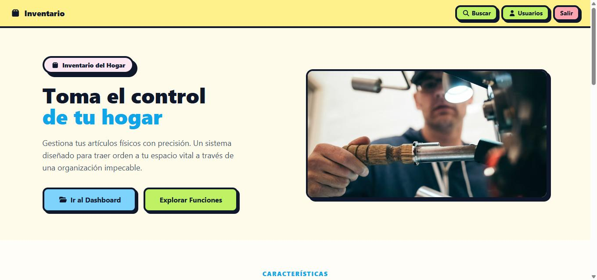
http://localhost/ — pantalla de bienvenida.
Ir al Dashboard: lleva directo al listado de categorías (pide login si no hay sesión activa).Explorar Funciones: despliega el resto de la landing con las características del sistema.Acceso protegido por usuario y contraseña. El sistema emite un token que se guarda en el navegador.
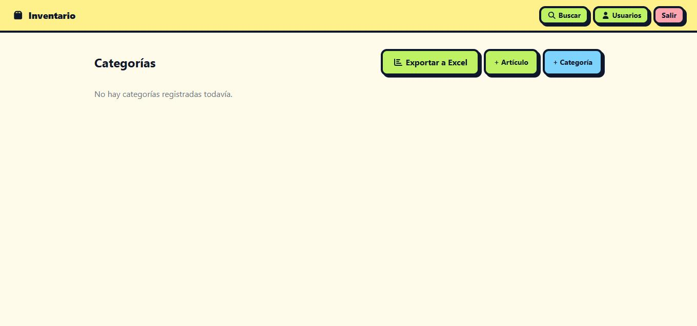
Formulario de login completado, listo para enviar.
Gestión de usuarios (sección 9) o con el script npm run user:create del backend.Vista principal tras iniciar sesión: todas las categorías del inventario, con accesos rápidos a las acciones más comunes.
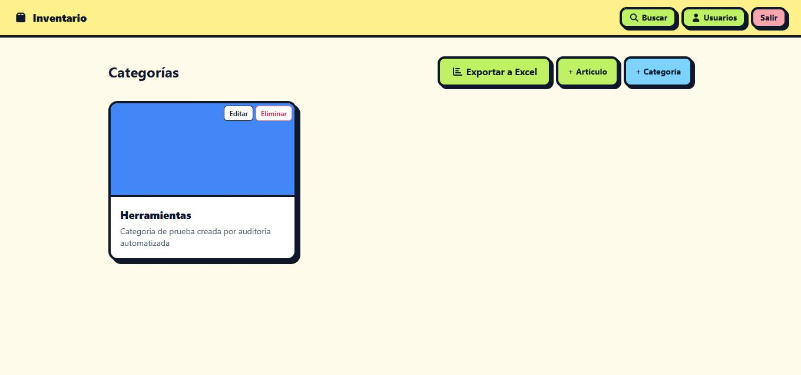
Categoría "Herramientas" ya creada, con imagen y descripción.
+ Categoría: crea una nueva categoría.+ Artículo: crea un artículo directamente.Exportar a Excel: descarga el inventario completo (ver sección 10).Formulario para dar de alta una nueva categoría, con nombre, descripción e imagen opcional.
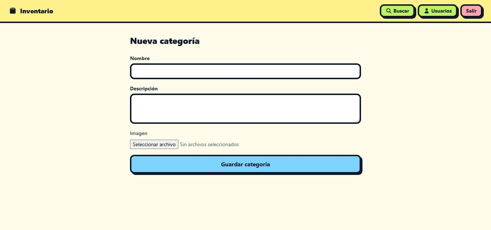
Formulario vacío.
Formulario completo, con la vista previa de la imagen ya cargada antes de guardar.
Al entrar a una categoría se listan los artículos que contiene, con su stock disponible.
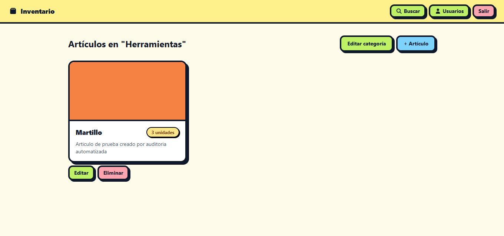
Artículo "Martillo" con 3 unidades en stock.
Cada artículo pertenece a una categoría y tiene nombre, descripción, stock, estado de reparación e imagen.
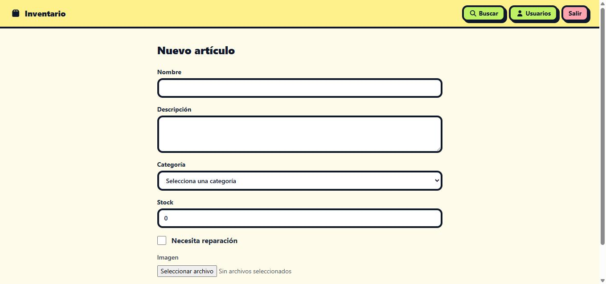
Formulario vacío.
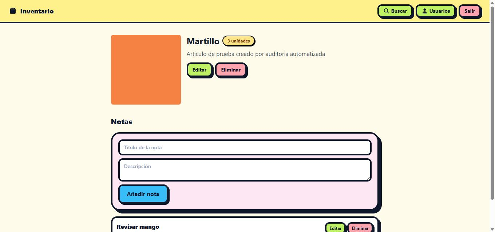
Formulario completo, con categoría seleccionada, stock e imagen.
La vista de detalle permite editar o eliminar el artículo, y llevar notas asociadas (por ejemplo, seguimiento de reparaciones).
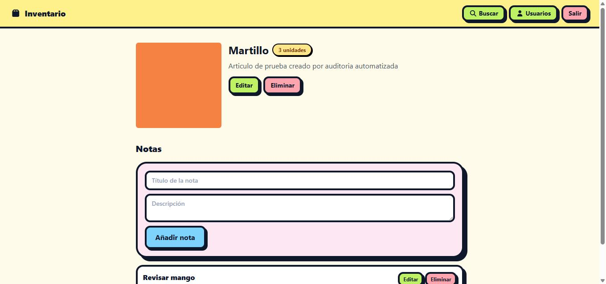
Nota "Revisar mango" agregada al artículo.
Busca artículos por nombre o descripción con tolerancia a errores de tipeo (búsqueda difusa).
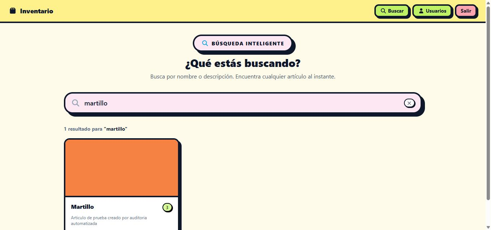
La búsqueda "martillo" encuentra el artículo aunque haya diferencias de tipeo.
Alta, edición y baja de usuarios con acceso al sistema.
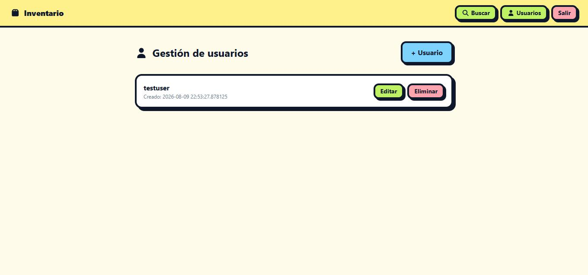
Usuario de prueba con fecha de creación.
El botón Exportar a Excel del panel de categorías (sección 3) genera y descarga un archivo .xlsx con dos hojas: categorías y artículos.
.xlsx válido (formato "Microsoft Excel 2007+"), con todos los artículos y categorías del inventario.Al cerrar sesión se elimina el token guardado y cualquier intento de acceder a una ruta protegida redirige automáticamente al login.
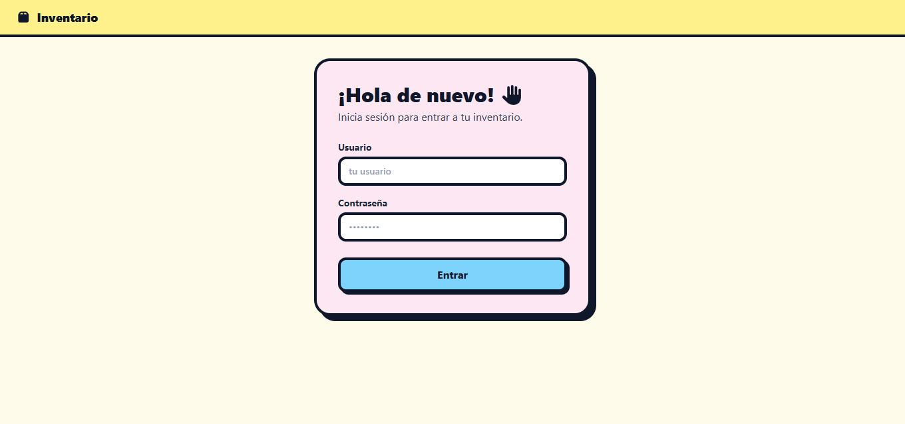
Redirección automática a /login?redirect=/categories al intentar acceder sin sesión.
Además de la web, el inventario se puede consultar por Telegram hablándole al bot en lenguaje natural. El bot usa un modelo de IA (Ollama) para entender el mensaje y llamar a las mismas funciones del backend.
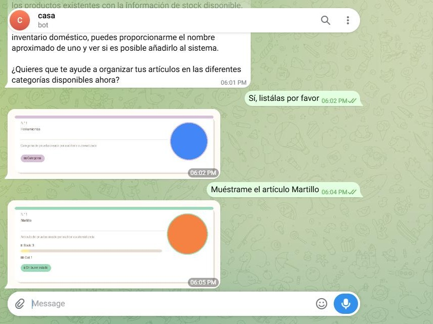
Consultas directas ("Muéstrame el artículo Martillo") devuelven una tarjeta con la información real del inventario.
Si la pregunta no requiere datos del inventario, el bot responde solo con texto.